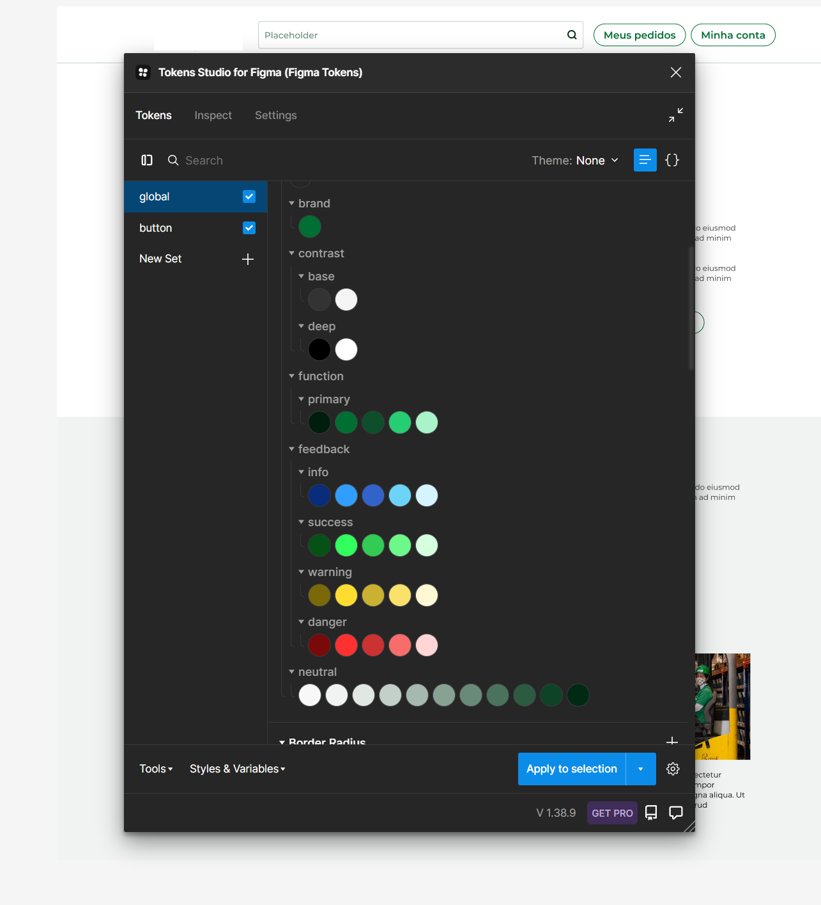

O processo manual de personalização era demorado e propenso a erros, resultando em atrasos na entrega e inconsistências visuais. A empresa precisava de uma solução que permitisse criar e gerenciar personalizações de forma eficiente, mantendo a consistência do design e a qualidade visual.
Desenvolver um sistema de personalização de páginas que utilizasse tokens de design para facilitar a criação e a manutenção de variações de design para diferentes clientes. Utilizar o Figma, Tokens Studio e GitHub para implementar a solução.
A solução foi dividida em três partes principais: definição dos tokens de design, implementação no Figma e integração com o sistema de versionamento no GitHub.
Tokens de design são unidades atômicas de design que representam as decisões de design, como cores, espaçamentos, tipografia e componentes. Eles foram definidos para capturar todas as variáveis que poderiam mudar de um cliente para outro.
Utilizando o Tokens Studio no Figma, criamos um sistema centralizado para gerenciar os tokens de design.
